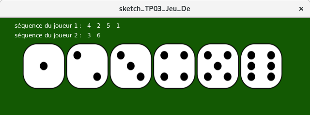
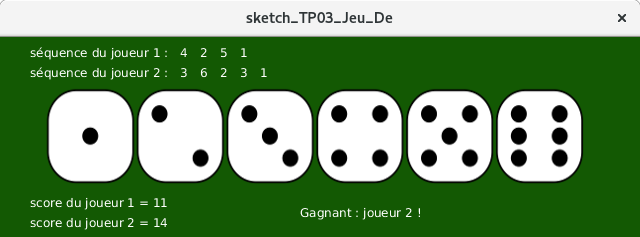

Avant de commencer le TP, copiez (dans un dossier de votre répertoire personnel) les sketchs contenus dans le dossier code. Remarque : même si ce n’est pas mentionné explicitement sur la feuille de TP, vous réaliserez systématiquement cette opération à chaque début de nouveau TP.
Un joueur réalise des tirages successifs avec un dé à 6 faces. Les faces sont numérotées de 1 à 6.
Règle : le joueur lance le dé aussi longtemps qu’il ne tombe pas sur la face numérotée 1. Lorsque c’est le cas, le jeu s’arrête, et le score du joueur est affiché à l’écran.
Selon la version du jeu, le score sera soit la somme, soit la moyenne, soit la valeur de face maximum obtenue (avant la face 1, qui ne compte pas).
Ouvrez le sketch Processing fourni Sketch_TD03_Jeu_De. Vous obtenez 4 onglets :
| Sketch_TD03_Jeu_De | c’est l’onglet principal, il contient toutes vos fonctions (calcul de score) et les fonctions setup(), mousePressed(), finSequence() |
| Graphisme | code pour la gestion du graphisme (vous ne modifierez pas ce code) |
| Tests | les fonctions de test |
| Z_Reponses | ne contient que du texte sous forme de commentaires = les réponses aux questions posées au fil du sujet (autre que le code), notamment les tableaux de tests à remplir |
Les variables nbJets et jets[] permettent de stocker respectivement le nombre de jets (clics sur une face) effectués, et de stocker les faces sélectionnées. La fonction mousePressed() s'occupe de les mettre à jour à chaque clic, et de lancer la fonction finSequence() lorsque la face 1 a été sélectionnée. La séquence s'affiche progressivement, ainsi que le score en fin de séquence.
Dans le code fourni, le score du joueur est calculé au fur et à mesure des tirages grâce à la fonction somme (écrite en TD) : elle tire un entier (en consultant les jets passés en paramètre) tant que ce dernier est différent de 1 et renvoie la somme des entiers tirés. Ce code est presque parfait... Il y a une toute petite erreur dans la fonction somme : vous allez la corriger !
| Tests | Résultat(s) attendu(s) | Résultat(s) observé(s) |
|---|---|---|
| 4 ;2 ;5 ;1 | ||
| 1 |
test_somme()fournie dans l’onglet Tests : décommentez son appel dans la fonction
setup(), mettez des points d’arrêt, et résolvez les erreurs du code.
Nous allons rajouter un deuxième joueur. Le jeu consiste alors à faire une première série de jets par le joueur 1, puis une deuxième série par le joueur 2, puis à comparer les scores.
Le rendu graphique devra être le suivant (la taille de la fenêtre ne change pas) :
| en cours de partie : |  |
| en fin de partie : |  |
De manière dynamique :
Observez le code, et effectuez les changements nécessaires :
void afficherVerdict(int scoreJoueur1, int scoreJoueur2).
| Tests | Résultat(s) attendu(s) | Résultat(s) observé(s) |
|---|---|---|
| j1 : ; j2 : ; | ||
| j1 : ; j2 : ; | ||
| j1 : ; j2 : ; |
Le calcul du score change : c’est maintenant la moyenne des faces obtenues (avant la face 1) à la place de la somme.
float moyenne(int[] seqJets)et adapter son contenu.
finSequence()pour le calcul du score des joueurs.
test_moyenne().
| Tests | Résultat(s) attendu(s) | Résultat(s) observé(s) |
|---|---|---|
| 4 ; 2 ; 5 ; 1 | ||
| 1 | ||
| ... |
Le calcul du score change à nouveau : c’est maintenant la valeur de face maximum obtenue (avant la face 1).
int maximum(int[] seqJets)et adapter son contenu.
finSequence()pour le calcul du score des joueurs.
test_maximum().
| Tests | Résultat(s) attendu(s) | Résultat(s) observé(s) |
|---|---|---|
| 3 ; 5 ; 2 ; 1 | ||
| 1 | ||
| 6 ; 5 ; 2 ; 3 ; 1 | ||
| 3 ; 5 ; 2 ; 6 ; 1 |
La règle du jeu change ici complètement : le joueur lance le dé aussi longtemps qu’il obtient une face supérieure ou égale à la précédente. Dès qu’il obtient une face inférieure à la précédente, le jeu s’arrête. Le score est le nombre de faces successives croissantes obtenues.
somme(), modifier son prototype en
int suite(int[] seqJets)et d'adapter son contenu.
finSequence()pour le calcul du score des joueurs.
test_suite().
| Tests | Résultat(s) attendu(s) | Résultat(s) observé(s) |
|---|---|---|
| 3 ; 5 ; 2 | ||
| 2 ; 2 ; 7 ; 2 | ||
| .... |
Remarque : On n'utilise aucun tableau dans cet exercice. Créez un nouveau sketch Processing pour cet exercice (pas un onglet).
Nous allons exploiter les relevés de températures d’une station météo (ici, pour l’exercice, les valeurs seront aléatoires). Écrire une fonction qui, étant donné un nombre n, tire aléatoirement (entre -10 et 40) n valeurs de températures, puis affiche la température minimale, la température maximale et la moyenne des températures. Un prototype possible est le suivant :
void statsTemperatures(int n)
| Tests | Résultat(s) attendu(s) | Résultat(s) observé(s) |
|---|---|---|
| n=3; t1=5; t2=3; t3=15 | ||
| n=1; t1=35 | ||
| n=0 | ||
| n=2; t1=35; t2=-5 | ||
| n=-2; |
Les exercices ci-dessous ne sont pas obligatoires.
Écrire une fonction qui prend deux paramètres a et b entiers, et affiche les entiers qui sont compris entre a et b. Attention, a et b peuvent être donnés dans le désordre, commencez par les échanger au besoin.
| Tests | Résultat(s) attendu(s) | Résultat(s) observé(s) |
|---|---|---|
| a=3; b=7 | ||
| a=4; b=1 | ||
| a=0; b=0 |
int minimum(int a, int b)
| Tests | Résultat(s) attendu(s) | Résultat(s) observé(s) |
|---|---|---|
| a=3; b=5 | ||
| a=-1 ; b=-4 | ||
| a=0; b=0 |
int minimum4(int a, int b, int c, int d)
| Tests | Résultat(s) attendu(s) | Résultat(s) observé(s) |
|---|---|---|
| a=3; b=5; c=5 ; d=-1 | ||
| a=-1 ; b=-4 ; c=145 ; d=-10 | ||
| a=0; b=0; c=0 ; d=0 |
Une équation du premier degré est une équation de la forme : ax + b = 0.
Écrire une fonction qui étant donnés a et b affiche la solution de l’équation. Un prototype possible est le suivant :
void premierDegre(float a, float b)
| Tests | Résultat(s) attendu(s) | Résultat(s) observé(s) |
|---|---|---|
| a=3 ; b=6 | ||
| a=3 ; b=-6 | ||
| a=-3 ; b=-6 | ||
| a=3 ; b=0 | ||
| a=0 ; b=6 |
Une équation du second degré est une équation de la forme : ax2 + bx + c = 0
Écrire une fonction qui étant donnés a; b et c affiche l’ensemble des solutions réelles de l’équation. Un prototype possible est le suivant :
void secondDegre(float a, float b, float c)
Vous pourrez penser à utiliser la fonction premierDegre de l’exercice précédent pour les cas pertinents, et à définir une fonction
float discriminant(float a, float b, float c)
| Tests | Résultat(s) attendu(s) | Résultat(s) observé(s) |
|---|---|---|
| a=3; b=6; c=0 | ||
| a=0 ; b=0 ; c=0 ; | ||
| a=-3 ; b=-6 ; c=10 |
Powered by w3.css